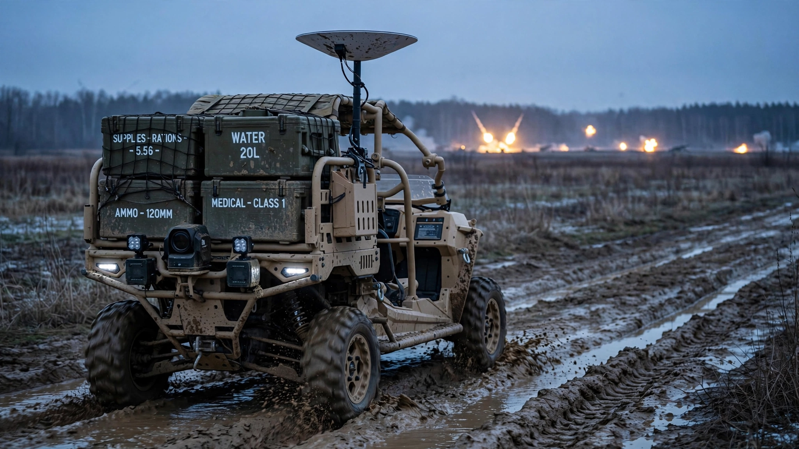

Forterra Sent 105 'Autonomous' Vehicles Into Ukrainian Combat. After 1,100 Missions, Soldiers Still Remote-Control Them.
At $17 per pound of cargo delivered into a contested zone, Forterra's Lancer ATVs are 90% cheaper than helicopter resupply. But cross-referencing the company's deployment data against Ukraine's own 25,000-unit ground robot procurement reveals the real gap between Silicon Valley defense tech and wartime industrial scale.

$17 per pound. That is the hardware-amortized cost of delivering cargo into a contested Ukrainian combat zone using a Forterra Lancer autonomous ATV, based on the company's own operational data disclosed this week. Helicopter resupply into zones saturated with Russian air defenses runs $200 to $500 per pound by standard DOD logistics estimates. Human foot patrols carrying supplies through areas hunted by first-person-view attack drones cost something harder to quantify: lives.
By that arithmetic, Forterra's Lancers look like one of the most cost-effective military logistics innovations in a generation. Soldiers agree. "It's fucking fantastic, and we are dying to get more," a Ukrainian soldier told TechCrunch, speaking anonymously for security reasons.
One considerable problem. "Autonomous" is doing extraordinarily heavy lifting in Forterra's press release, because the soldiers who rely on these vehicles every day are teleoperating nearly all of them by hand.
What 105 Vehicles Actually Did
Forterra disclosed on Monday that it manufactured and deployed 105 Lancer vehicles to Ukrainian forces under a U.S. government program, completing full delivery in under six months. Built on Polaris Ranger 1500 platforms outfitted with Forterra's AutoDrive autonomy stack and Vektor communications system, the gas-powered Lancers carry 750 kilograms of cargo per mission, three times the 250 kg capacity of Ukraine's domestically produced battery-powered UGVs.
Since arriving in October 2025, those 105 vehicles have driven more than 2,500 miles across 1,100-plus missions, carried 777,440 pounds of total cargo, and completed 88 casualty evacuations. Some have been destroyed. Mud is the usual killer: vehicles get stuck in the deep Ukrainian clay and Russian forces target them without hurry, lobbing munitions at a sitting target that cannot escape or fight back. Forterra hasn't disclosed how many Lancers it lost.
But soldiers are teleoperating nearly all of them. Not because the autonomy crashed spectacularly, but because war presents problems that no test facility can simulate, and losing a vehicle worth north of $100,000 to an edge case the AI wasn't trained for is an unacceptable gamble when wounded soldiers need extraction now, not after a software patch.
"We actually need to be able to respond to the enemy threats, live, while it's in front of the enemy, which the autonomy doesn't know how to do yet," the Ukrainian soldier explained to TechCrunch.
A Cost Calculation Nobody Published
Forterra has raised more than $500 million in venture capital from funds including XYZ Venture Capital and Moore Strategic Partners. A Polaris Ranger 1500 retails for approximately $18,000 to $22,000 before Forterra adds its sensor suite, compute hardware, Starlink integration, and communications stack. Reasonable per-unit estimates fall between $100,000 and $150,000, and we use the midpoint of $125,000 throughout this analysis.
| Delivery Method | Est. Cost per Pound | Risk to Personnel | Availability in FPV Zones |
|---|---|---|---|
| Forterra Lancer (hardware only) | $16.90 | None (remote-operated) | High |
| Forterra Lancer (fully loaded est.) | $25–35 | None | High |
| Helicopter resupply | $200–500 | Crew of 2–4 | Low (air defense threat) |
| Foot patrol | Minimal direct cost | Extreme | Suicidal in contested zones |
At 105 vehicles and $125,000 each, the fleet represents a $13.1 million hardware investment. Divide into 777,440 pounds delivered and you get $16.90 per pound before fuel, Starlink subscriptions, maintenance, and operator training push the fully loaded figure toward $25 to $35. Even at the high end, that is 93% cheaper than the cheapest helicopter option.
Eighty-eight casualty evacuations add another dimension entirely. If one in five of those evacuations saved a life that delayed treatment would have lost (a conservative assumption when FPV drones actively hunt stretcher-bearers), roughly 17 soldiers survived because a robot carried them out instead of a person who could also be killed trying. Using the DOD's $7.4 million value of statistical life for American policy purposes, or even a far more conservative $500,000 per trained Ukrainian combat soldier accounting for training investment and unit cohesion, 17 survivors represent $8.5 million in preserved combat capability against a $13.1 million hardware bill. On medevac value alone, the fleet approaches break-even within its first 18 months of operation.
Ukraine's Own Robot Army Dwarfs Forterra
Here is where celebration meets context. Forterra's 105 vehicles? A rounding error.
In March 2026 alone, Ukrainian forces conducted over 9,000 UGV missions using domestically produced platforms, according to data released by Defence Minister Mykhailo Fedorov. In the first half of 2026, Ukraine contracted 25,000 unmanned ground vehicles from domestic manufacturers, double the volume planned for all of 2025, backed by 19 contracts worth 11 billion UAH (approximately $268 million). Ukraine's stated objective: shift 100 percent of frontline logistics to robotic platforms. A defence robotics sector that did not exist when the full-scale invasion began now encompasses 280-plus companies producing 550-plus distinct solutions.
| Metric | Forterra (U.S.) | Ukraine Domestic | Ratio |
|---|---|---|---|
| Vehicles contracted (H1 2026) | 105 | 25,000 | 1 : 238 |
| Missions (comparable period) | 1,100 (9 months) | ~54,000+ (9 months est.) | 1 : ~49 |
| Est. unit cost | $125,000 | ~$10,700 | 11.7 : 1 |
| Cargo capacity per vehicle | 750 kg | 250 kg | 3 : 1 |
| Cost per kg of capacity | $167 | $43 | 3.9 : 1 |
Ukrainian UGVs cost roughly $10,700 each when you divide $268 million by 25,000 units. Forterra's Lancers carry three times the cargo but cost nearly twelve times as much per vehicle. Simple ratio. On a cost-per-kilogram-of-cargo-capacity basis, Ukraine's cheaper robots are four times more efficient, which matters enormously when your vehicles are being destroyed faster than you can replace them and every procurement dollar competes with ammunition, drones, and body armor for funding priority. When attrition is a fact of the battlefield, and every soldier and commander interviewed for this story confirms that it is, cheap and expendable beats expensive and careful. This is the same logic that made FPV attack drones, at $500 to $2,000 each, the defining weapon of this war while traditional cruise missiles at $1 million to $3 million each sit in increasingly guarded stockpiles.
Why Autonomy Breaks Under Fire
Consider what civilian self-driving has achieved after more than $100 billion in cumulative investment and two decades of engineering: Waymo operates geofenced robotaxis in a handful of Sun Belt cities with pristine lane markings and predictable weather patterns, and that is considered a breakthrough. Now add minefields and anti-vehicle mines that rearrange themselves as engineers clear them. Russian electronic warfare systems jamming GPS and Starlink frequencies with increasing sophistication. FPV attack drones closing at 80 mph with a warhead strapped to the front. Artillery craters that appeared overnight in a road the vehicle navigated safely yesterday morning.
Military ground autonomy shares almost nothing with civilian self-driving except the word "autonomous." Nothing. Forterra's chief growth officer Scott Sanders, a former U.S. Marine, acknowledged the gap: solving combat autonomy requires combining classical robotics with generative AI, trained on data "that aren't available in an open source model because they're not things that humans do, whether that's figuring out how to navigate a minefield or [operating] a weapon system."
Progress exists. BAE Systems partnered with Forterra to prototype an autonomous Armored Multi-Purpose Vehicle for 2026 demonstration. The U.S. Army awarded $15.5 million in OTA agreements to Forterra, Overland AI, and Scout AI to integrate commercial autonomy onto Infantry Support Vehicles for soldier evaluation. Scout AI raised $100 million this year specifically for military AI foundation models. Sounds promising. But evaluation is not deployment. Prototype is not production. Nobody has demonstrated fully autonomous operation under combined enemy fire, electronic warfare, and contested terrain simultaneously, and until someone does, the word "autonomous" in every defense tech pitch deck should come with an asterisk the size of a Lancer's Starlink dish.
Limitations of This Analysis
Forterra has not disclosed per-unit cost, total vehicles lost in combat, operational cost per mission, or the clinical severity of its 88 casualty evacuations, which means we cannot determine whether those evacuations were time-critical rescues that saved lives or routine battlefield ambulance runs that would have been completed by other means. Our cost estimates use the known Polaris Ranger 1500 retail price plus publicly available data on comparable sensor and compute packages; if actual costs are significantly higher due to military-specification hardening, the cost-per-pound advantage narrows and the break-even timeline extends. Ukrainian UGV mission counts from the Defence Ministry likely include shorter-range, lighter-payload operations than Forterra's, making the raw mission-count comparison imprecise. We lack Ukrainian UGV attrition data, which could be substantially higher for cheaper platforms. Our $10,700-per-unit Ukrainian UGV figure is an average across 19 contracts covering different vehicle types and may obscure significant cost variation between logistics carriers and heavier combat-oriented platforms.
The Strongest Case for Forterra
Dismissing Forterra as a premium accessory ignores what capability density buys in combat. One Lancer mission replaces three Ukrainian UGV runs in cargo volume and operates on gasoline without the charging infrastructure that battery-powered vehicles need in zones where electricity is unreliable or entirely absent. Starlink integration provides high-bandwidth communications that most Ukrainian UGVs lack. Measured in cargo-ton-miles rather than raw mission count, Forterra's 1,100 missions delivered the equivalent of roughly 3,300 lighter Ukrainian sorties.
More importantly, the teleoperation infrastructure Forterra is building now constitutes the foundation on which genuine autonomy will eventually operate: operator workflows, communications hardening protocols, electronic warfare countermeasures, and maintenance doctrine, all forged under actual combat conditions rather than simulated ones. Every mile driven, every minefield navigated, every EW encounter logged becomes training data for the autonomy stack that doesn't exist yet but that $500 million in venture capital is betting will arrive. Forterra isn't teleoperating because its AI failed; it is collecting the most valuable dataset in military robotics, and it can only be collected by vehicles operating in a real war.
What You Can Do With This
If you work in defense procurement: the Lancer data settles one question definitively. Ground robot logistics at $17 to $35 per pound is an order of magnitude cheaper than any crewed alternative in contested zones. Buy teleoperated logistics platforms now and treat full autonomy as a software update that arrives when the combat data pipeline matures, not as a procurement prerequisite that delays fielding by years while soldiers die carrying supplies on foot.
If you invest in defense technology: separate marketing from operational reality. A company whose combat-deployed products are teleoperated is a strong telerobotics company with autonomy potential, not a proven autonomy play. Price accordingly. When Forterra or a competitor demonstrates a fully autonomous contested-logistics mission under combined electronic warfare and enemy fire, that changes everything. Not before.
If you follow the war in Ukraine, watch the 25,000-UGV procurement number. If Ukraine achieves even 60 percent delivery by December, it will have fielded more unmanned ground vehicles than any military in history. Not the United States, with its $886 billion annual defense budget. Not China. Not Russia. A country with a GDP smaller than Ohio's, fighting for its survival, building robot logistics from nothing in under four years.
The Bottom Line
Forterra's deployment is a genuine achievement: 105 vehicles delivered in six months, 777,440 pounds of cargo moved through contested terrain, 88 casualties evacuated from zones where stretcher-bearers get killed. Soldiers love them. The unit economics work. But "autonomous" remains a roadmap item, not a demonstrated combat capability, and what Forterra actually proved in nine months of Ukrainian operations is that teleoperated ground vehicles save lives and money at ratios that should embarrass anyone still authorizing helicopter resupply into FPV-saturated zones. That is a real finding, worth real investment, as long as investors understand they are buying telerobotics today and autonomy someday. Meanwhile, Ukraine is building its own robot logistics corps at 238 times the scale, at one-twelfth the per-unit cost, toward the same destination Forterra pitched its venture capitalists on: removing every human body from the kill zone before the drones find it.